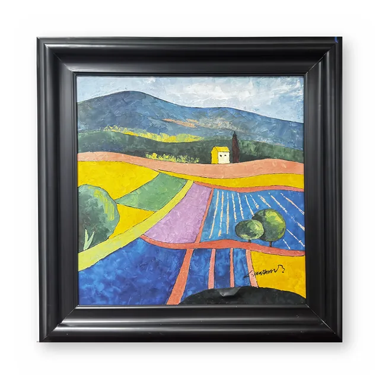
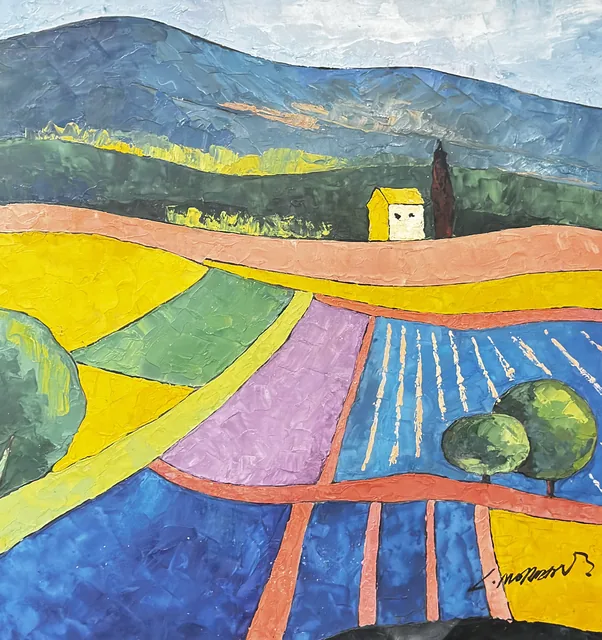
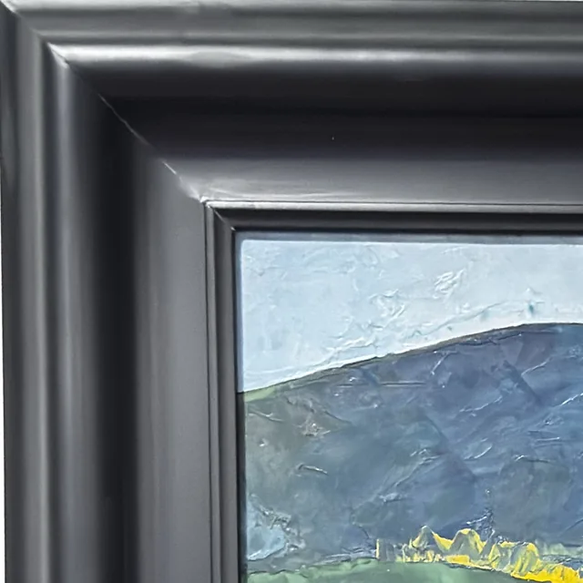
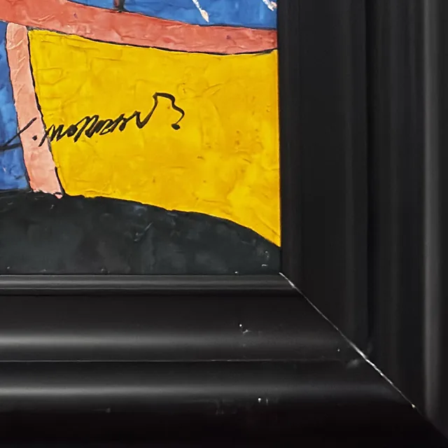
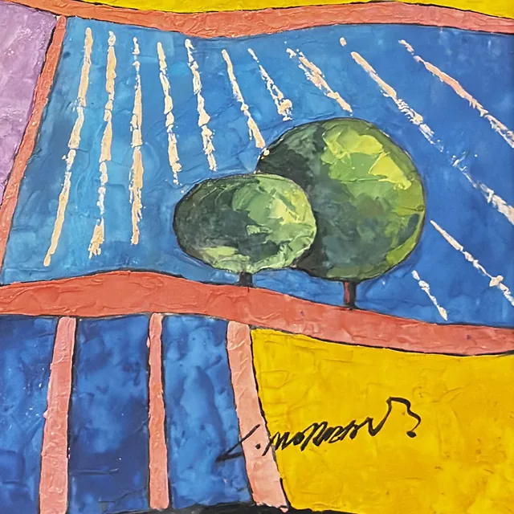
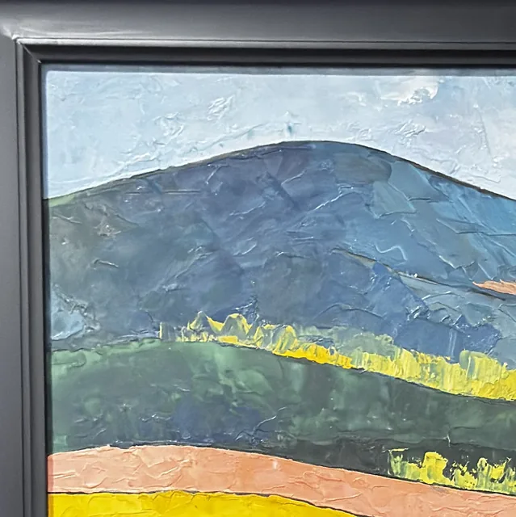
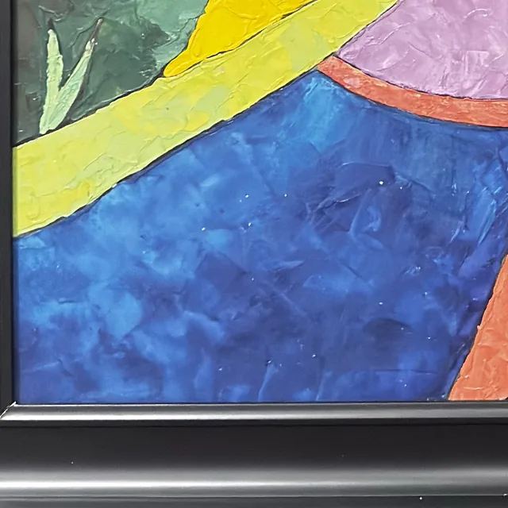
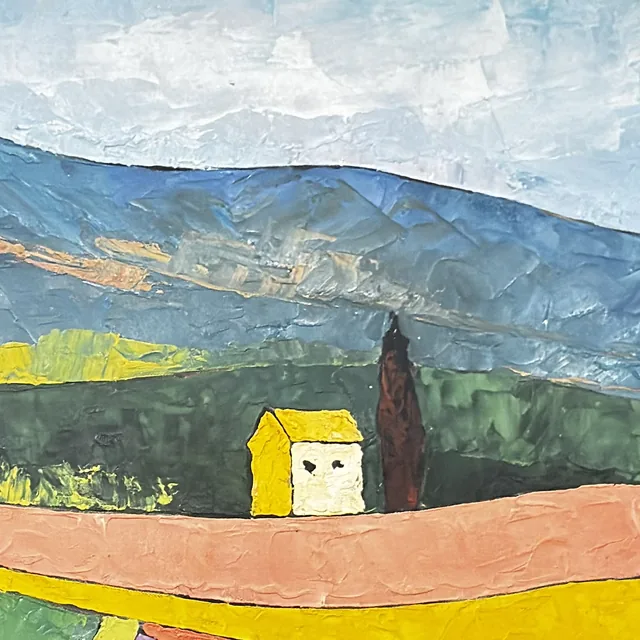

Paintings & Prints
Provencal Fields With Yellow Farmhouse, Signed, Framed
· late 20th - early 21st century
Price Upon Request








About the Item
A square canvas divided into broad, flat colour planes edged with dark contour lines, in the manner of a stained-glass window. Blue-violet mountains close off the horizon under a scumbled pale sky; below, the land opens into interlocking wedges of chrome yellow, lavender, cobalt and coral, crossed by salmon-pink roads that sweep in from the left. A tiny yellow farmhouse with a red roof and a dark cypress mark the middle distance; two round bushes and a lilac field with white furrow marks fill the foreground. Handling is smooth and matte with a fine linen-textured surface, quite different from the heavy impasto pieces around it. Medium: oil (or acrylic) on canvas. Signed lower right, on the yellow field. Condition: no visible damage; a fine craquelure-like crazing appears in the thicker white and coral passages, consistent with a heavily bodied ground rather than age.
Details
- Creation Year:
- late 20th - early 21st century
- Dimensions:
- Height: 39.0 in (99.06 cm)
Width: 39.0 in (99.06 cm)
outside of frame - Medium:
- oil (or acrylic) on canvas
- Period:
- 21St
- Condition:
- Offered in the condition shown in the photographs.
- Reference Number:
- VO-55
- Documentation:
- no certificate or label photographed